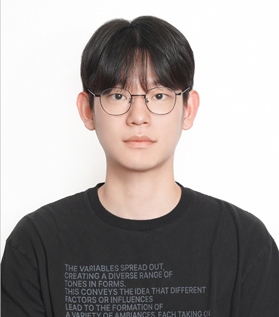
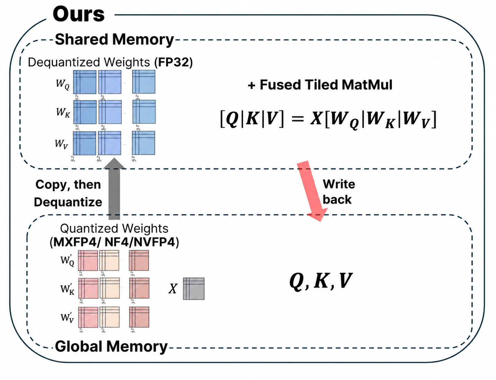
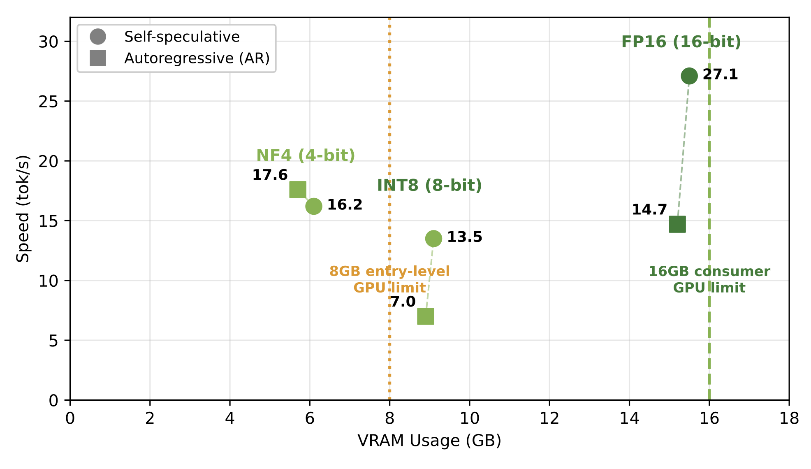
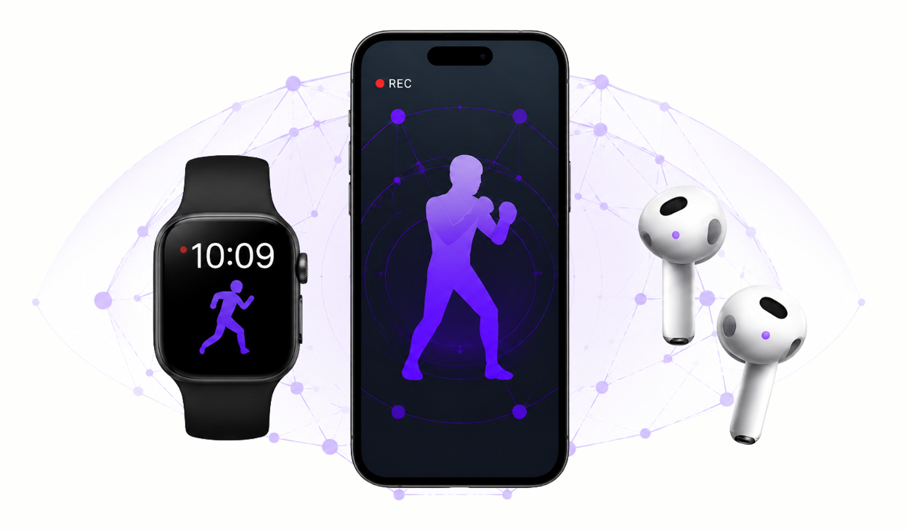

|
Jiseung Jeong
I am a B.S. student in Computer Science and Engineering at
UNIST,
and an undergraduate research intern at the
Ubiquitous AI Lab,
advised by Prof. Taesik Gong.
My research interests are in efficient and interpretable on-device
foundation models, with a current focus on Vision-Language-Action
(VLA) systems.
wjdwltmd1151 [at] unist [dot] ac [dot] kr
CV /
GitHub /
LinkedIn
|

|
|

|
Fused Dequantization for Quantized LLM Attention
CUDA kernels for 4-bit dequantization (NF4, MXFP4, NVFP4) fused into
QKV projection, cutting attention latency 20–25% on RTX 3090.
Course project for CSE412 (UNIST), 1st / 13 teams.
code
|
|

|
QuantShift
Studied self-speculative decoding under 4/8-bit quantization; showed
the speedup is bounded by the AR baseline, so NF4 gains nothing from
tuning exit depth. Course project for CSE402 (UNIST), 1st / 21
students.
code
|
|

|
Shadow Boxing Tracking with 3 Devices
Recognized and logged boxing motions by fusing IMU data from an
earbud, phone, and smartwatch. Course project for CSE465 (UNIST),
1st in final presentation / 8 teams.
code
|
|
|
YOLOkemon App
A YOLO-based Pokedex object-collection app using a
post-training-quantized (PTQ) model. Course project for CSE465 (UNIST).
video
|
|